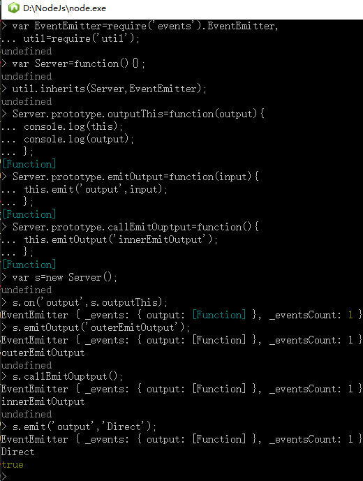

我们第一个要研究的 API 是 Events API。这是因为，尽管抽象，但它是其他所有 API 工作的基础模块。我们先看看 DOM 模型的 Events，然后 再与 Node 的实现方式进行比较。
DOM 是基于用户交互的用户驱动型事件模型，有着一组与树状结构（HTML， XML，等等）对应的接口元素。意思是，当用户与接口的某个特定部分交互时，对 应有一个事件和一个相关的对象，比如某个 HTML/XML 元素被点击或者进行了其 他操作。该操作对象有父节点，并且可能有子节点。因为操作对象是在一棵树中， 所以这个模型包含了冒泡和捕获的概念，就是允许沿着树的结构向上或向下的元素 也接收被触发的事件。
例如，在一个 HTML 列表中，在 <li> 上的一个点击事件，能够被其父节点 <ul> 上绑定的监听器所捕获。反过来，<ul> 上的点击会向下冒泡传给 <li> 上的监听器。因为 JavaScript 对象没有这一类树状结构，所以 Node 中的模型更加简单。
EventEmitter因为在浏览器中 Event 模型是绑定在 DOM 上的，所以 Node 创建了 EventEmitter 类来提供基础的事件功能。所有 Node 的事件功能围绕着 EventEmitter，因为它 的设计包含了其他类扩展所需要的接口类。EventEmitter 对象通常不会直接调用,它提供了一系列方法，其中最主要的两个是 on 和 emit，这些方法 供其他类使用。
server.on('event',function(a,b,c){
//具体操作
});
on 方法为一个事件创建了监听器，接受两个参数：需要监听的事件的名称，当事件触发时需要调用的函数。
//创建一个支持EventEmitter事件的新类‘
var util=require('util')
,EventEmitter=require('events').EventEmitter;
var Server=function(){
console.log('init');
}
util.inherits(Server,EventEmitter);
var s=new Server();
s.on('abc',function(){
console.log('abc');
})
s.emit('abc');
我们先包含了 util 模块，以便调用它的 inherits 方法。inherits 能够把 EventEmitter 类的方法添加到我们创建的 Server 类中。这意味着所有 Server 的新实例都能够使用 EventEmitter 的方法。
然后我们包含了 events 模块。但我们只想调用其模块中的 EventEmitter 类。注意，EventEmitter 是以大写字母开始命名的，用来表示它本身是一个类。我们不调用 createEventEmitter 方法，因为不打算直接使用 EventEmitter 实例，只是想把它的方法绑定到我们要用的 Server 类上。
下一步创建基础的 Server 类。它只提供了一 个简单的函数，就是在初始化的时候记录一条消息。重要的一步是使用 sys.inherits 把 EventEmitter 作为超类添加给 Server 类。因为 EventEmitter 是接口，从 EventEmitter 继承的类需要使用 new 关键字来构造。Server 的实例能够访问其超类（EventEmitter）的方法，也就是说我们可以调用 on 方法来为这个 实例添加监听器。
触发事件监听器只要调用从 EventEmitter 继承的 Server 实例的 emit 方法就行了。
s.emit('abc');需要注意的是，这些事件是针对某个实例的，不存在全局的事件。当 你调用 on 方法的时候，需要绑定在特定的基于 EventEmitter 的对象上。Server 类不同的实例之间也不会共享事件。
Callback语法
使用事件很重要的一个部分是处理回调函数.当调用 emit 时，除了事件的名称，你可以传入任意数目的参数。
s.emit('abc',a,b,c); //触发事件的时候传递参数
这里包含了 3 个参数。这些参数都将传给该监听该事件的函数。比如，从 http 服务器接 收到 request 请求时，你会收到两个参数：req 和 res。
//触发器里调用事件
if(arguments.length<=3){
//速度快
handler.call(this,argument[1],argument[2]);
}else{
//速度慢
var args=Array.prototype.slice.call(arguments,1);
handler.apply(this,args);
}
这两种代码都是 JavaScript 调用函数的方法。如果传给 emit() 的参数只有 3 个 或更少，该方法就会使用捷径，直接调用 call 方法。否则，它就会使用较慢 的 apply 方法，以数组的方式传递所有的参数。这里需要注意的是，Node 调用 这两种方法时都直接使用了 this 参数。这意味着事件监听器被调用的时候是在 EventEmitter 的上下文中，而不是它们原始的位置。通过 Node 命令行解析器， 你可以清楚地看见当 EventEmitter 调用对象时会发生什么事情。
输出例子中首先设置了一个 Server 类，它包含了触发 output 事件的函数。 outputThis 方法作为事件监听器绑定在 output 事件上。在不同的上下文中 触发 output 事件时，我们保持在 EventEmitter 对象所在的作用域中。所以 s.outputThis 能够访问的 this 变量的值是属于该 EventEmitter 的。因此，如 果我们想在事件回调函数中使用 this 变量的话，就必须把它作为一个参数传入并 赋值到另外一个变量上。